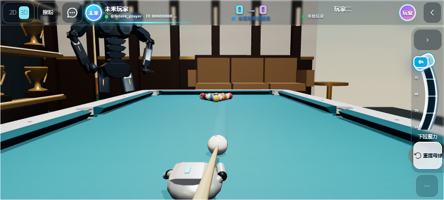
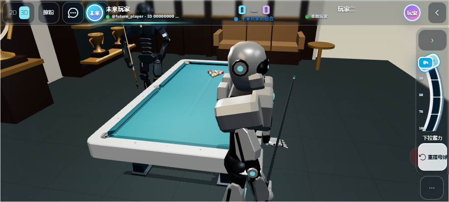
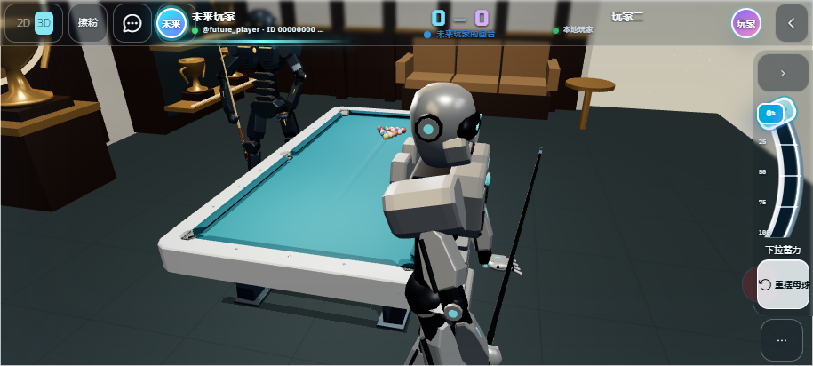

稳定瞄准 · 球杆随人到位
2026-09-06 · 915 × 412 横屏触控模拟。截图来自实际 WebGL
渲染，尚未进行手机真机验收。

连续左右触控微调保持俯身姿态。70
次采样均未进入行走，第一人称相机高度变化不足 0.7 毫米。

走位时手持 aurora-prism 所选模型，台边的击球球杆隐藏，不会抢先出现。

切换 holo-laser
后，随身球杆同步使用对应模型与材质。机器人到位并俯身后，再切换为击球球杆。
验证：823 项单元测试、14 项浏览器回归通过；30 / 60 / 120 FPS
下验证微调与蓄力不触发反复起身。
浏览器采样 ·
线上资源校验 ·
发布记录